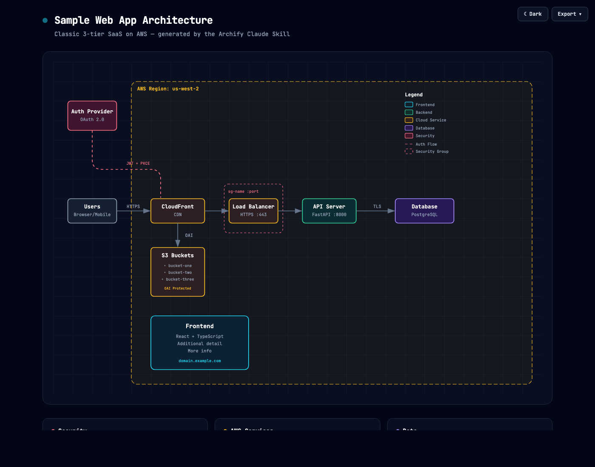
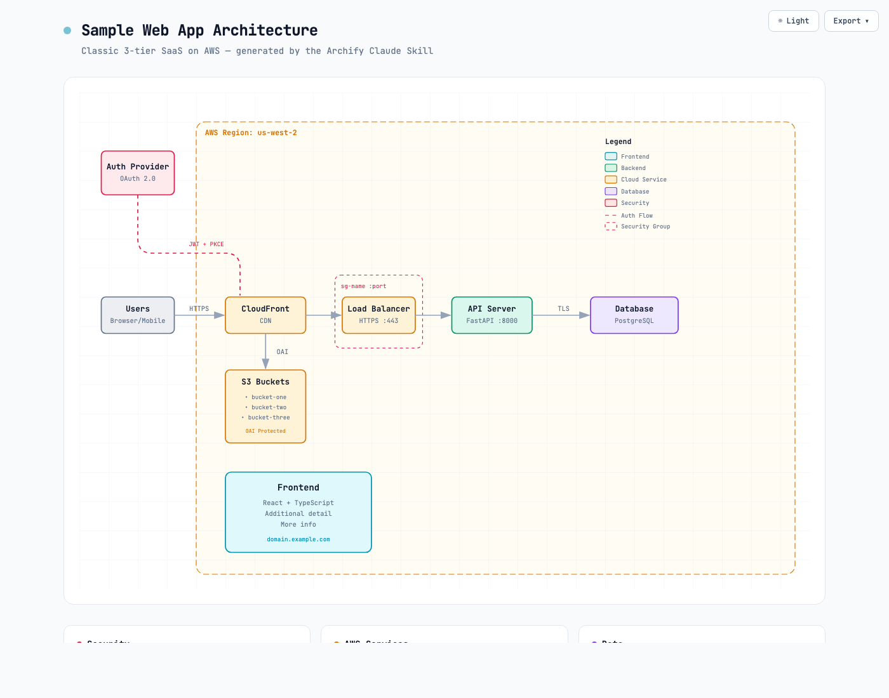
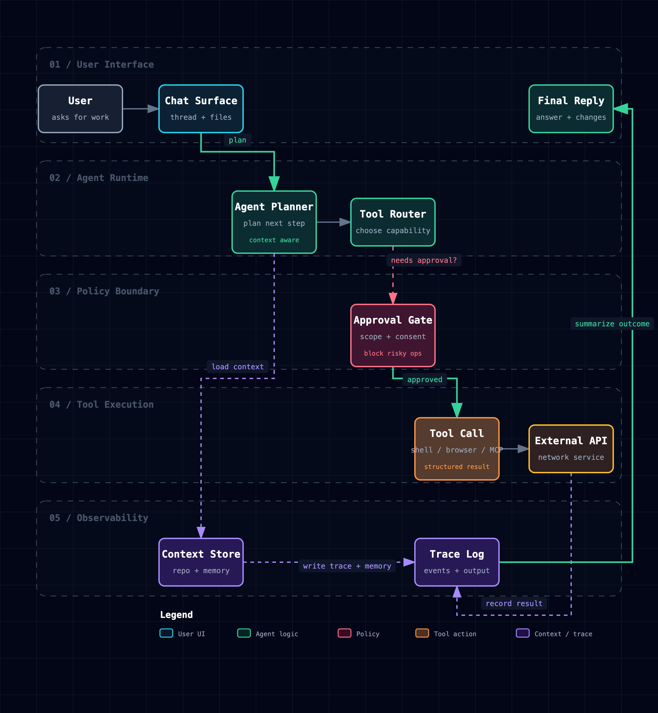
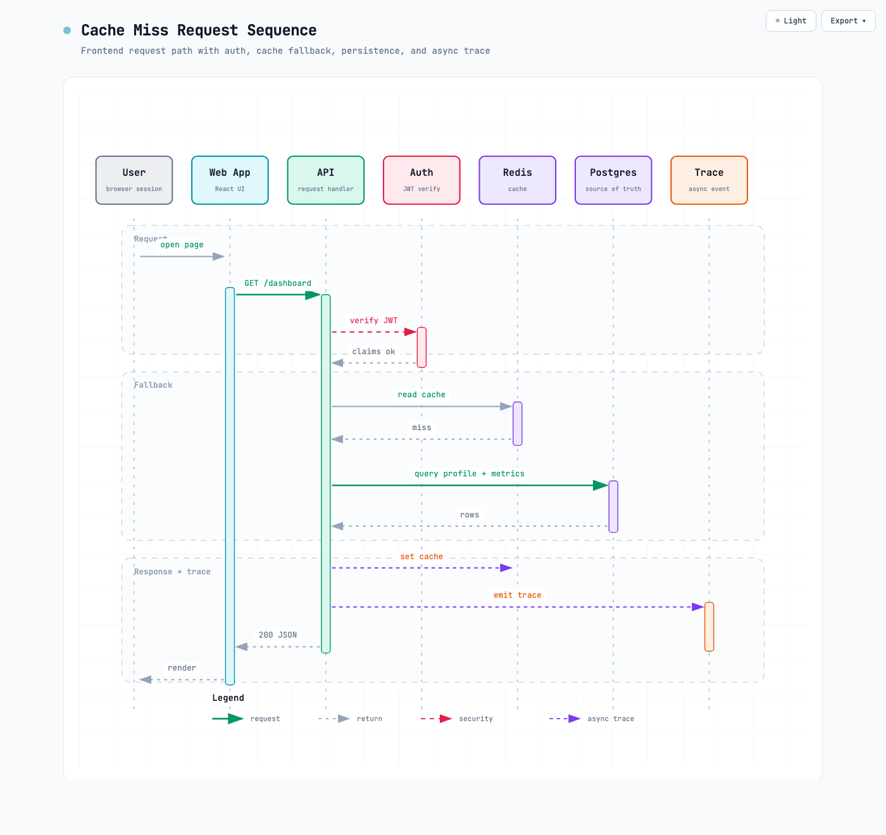
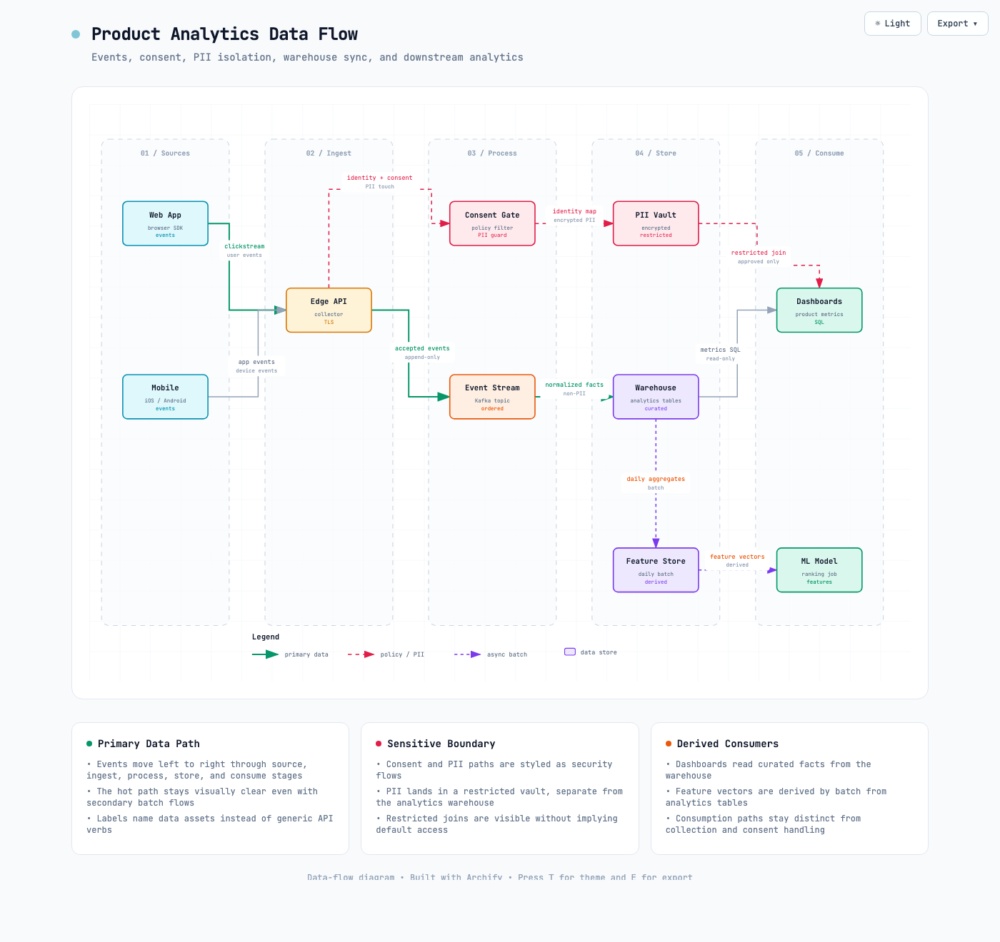
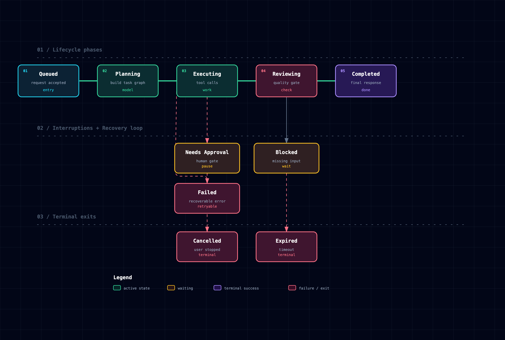
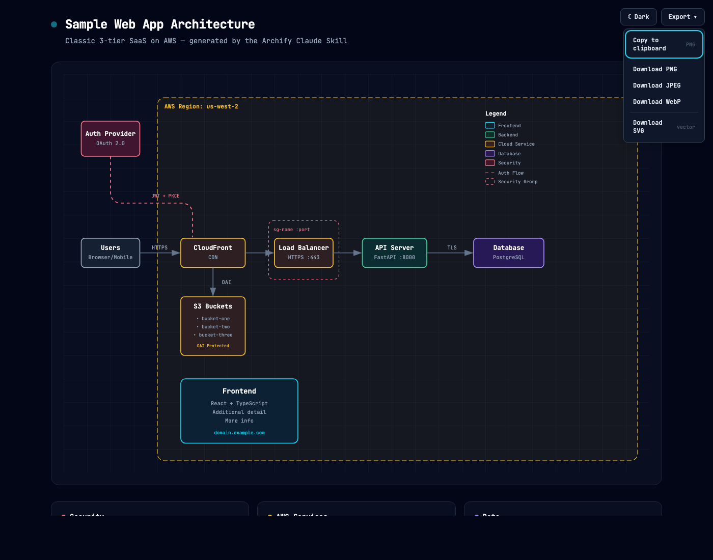

一句自然语言，直接长出架构图。为 Claude、Codex CLI、opencode 打造的图形技能， 输入系统描述 → 输出精美的技术架构图 / 流程图 / 时序图 / 数据流图 / 生命周期图。 支持明暗主题一键切换、PNG/JPEG/WebP/SVG 导出（最高 4× 分辨率）、复制到剪贴板直发 Slack/Notion/GitHub。







图片均来自 tt-a1i/archify 仓库，MIT 协议。 示例文件可访问 tt-a1i.github.io/archify 实时预览。
系统组件、云资源、数据库、缓存、服务、边界、安全组
Describe system structure
请求生命周期、审批流、工具调用、CI-CD、事件响应
Describe step order and branches
API 调用链、缓存回退、认证检查、异步追踪、服务交互
Describe who calls whom in what order
ETL/ELT、事件管道、PII 隔离、仓库同步、血缘分析
Describe sources → processing → storage → consumers
状态机、订单/任务/部署/Agent 运行、等待 / 重试 / 取消
Describe states, events, and terminal outcomes
# Step 1 — 安装 Archify Skill npx skills add tt-a1i/archify # Step 2 — 用自然语言描述你的系统（英文效果最佳） # Archify 会生成一个 archify-*.html 文件 # Step 3 — 让 Claude Code / Codex CLI 使用该 Skill # Agent 读取 SKILL.md 并调用 archify 生成 HTML 图 # Claude Desktop 配置 ~/.claude.json "skills": { "archify": { "command": "npx", "args": ["-y", "archify"] } } # 典型提示词示例（生成 Web 应用架构图） Use archify to draw an architecture diagram for a web application with: - React frontend calling a Node.js/Express API - PostgreSQL database and Redis cache - JWT authentication, deployed on AWS behind CloudFront.
?theme=light 可锁定亮色）
?openExport=1 直接打开）
| 导出格式 | 说明 | 适用场景 |
|---|---|---|
| PNG 推荐 | 最高 4× 分辨率原生渲染（无上采样模糊） | Slides / Notion / Slack / GitHub README |
| JPEG | 有损压缩，可调质量 | 文档 / 报告嵌入 |
| WebP | 现代格式，高压缩比 | 网页嵌入 |
| SVG | 真矢量 + @media (prefers-color-scheme) 自动主题 |
GitHub README（跟随系统明暗偏好） |
| 组件类型 | 颜色 | 适用场景 |
|---|---|---|
| Frontend 前端 | Cyan / 青色 |
客户端应用、UI、边缘设备 |
| Backend 后端 | Emerald / 翠绿 |
服务器、API、服务 |
| Database 数据库 | Violet / 紫罗兰 |
数据库、存储、AI/ML |
| Cloud / AWS | Amber / 琥珀 |
云服务、基础设施 |
| Security 安全 | Rose / 玫红 |
认证、安全组、加密 |
| Message Bus 消息总线 | Orange / 橙色 |
Kafka、RabbitMQ、SN、SQS、事件总线 |
| Edge / CDN | Cyan-dk / 深青 |
CDN、网关、边缘节点 |
| 场景 | 提示词 |
|---|---|
| Web 应用架构 | Create an architecture diagram for a web application with: React frontend, Node.js/Express API, PostgreSQL database, Redis cache, JWT authentication. |
| AWS 无服务器架构 | Create an architecture diagram showing: CloudFront CDN, API Gateway, Lambda functions (Node.js), DynamoDB, S3 for static assets, Cognito for auth. |
| 微服务系统 | Create an architecture diagram for a microservices system with: React web app and mobile clients, Kong API Gateway, User Service (Go), Order Service (Java), Product Service (Python), PostgreSQL + MongoDB + Elasticsearch, Kafka for event streaming, Kubernetes orchestration. |
| 数据流（产品分析） | Use archify to draw a data flow: Web App and Mobile SDK produce clickstream events → Edge API collects events → Consent Gate filters identity and PII → Kafka carries accepted events → Warehouse stores normalized facts → Feature Store derives daily feature vectors → Dashboards and ML Model consume downstream. |
| Agent 任务生命周期 | Use archify to draw a lifecycle diagram: A task starts at Queued → Planning builds the plan → Executing calls tools → Reviewing checks quality → Needs Approval and Blocked are wait states → Failed can retry, while Cancelled / Expired / Completed are terminal states. |
| 缓存失效时序 | Use archify to draw a sequence diagram showing: Client sends request → Gateway checks Redis cache → Cache miss → Query PostgreSQL → Store in Redis → Return response to client. |
| 特性 | 说明 |
|---|---|
| 输出格式 | 单个 HTML 文件（自包含，无外部依赖），可直接在浏览器打开或发送给用户 |
| 验证循环 | 内置渲染器验证，生成后自动检查节点布局和连线，无效输出自动修复重试 |
| SVG 主题自适应 | 导出的 SVG 内置两套颜色变量 + @media (prefers-color-scheme: dark)，放入 GitHub README 自动跟随系统偏好 |
| URL 参数 | ?theme=light 强制亮色 · ?openExport=1 自动打开导出菜单 · ?scale=2 放大倍数 |
| 安装方式 | NPM 全局：npx skills add tt-a1i/archify · Claude Desktop：编辑 ~/.claude.json 添加 skill 配置 |
| 依赖大小 | JS 152KB + HTML 100KB + Mermaid 5KB + Shell 1KB ≈ 258KB，无重型依赖 |